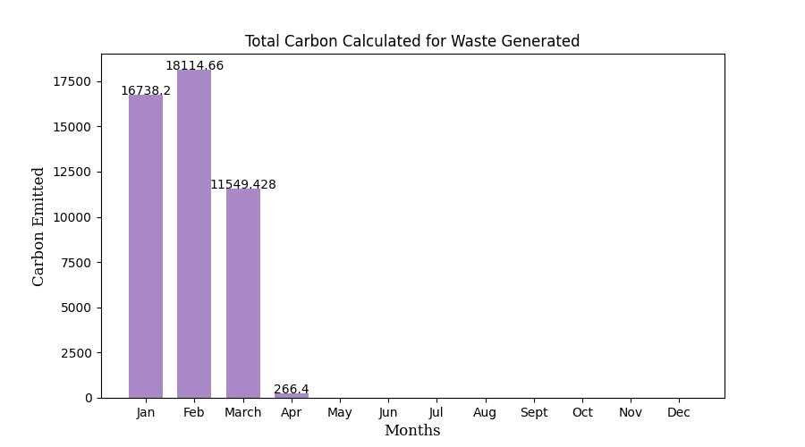

A Carbon Footprint is an impression determined worth or record that makes it conceivable to look at the aggregate sum of
greenhouse gases that an activity, product, company or country adds to the atmosphere.
- Carbon impressions are typically revealed in lots of outflows (CO2-same) per unit of correlation. Such units can be for instance tons CO2-eq each year,
per kilogram of protein for consumption, per kilometer travelled, per piece of clothing and so forth.
- An item's carbon impression incorporates the emanations for the whole life cycle. These run from the creation along the production network to its last
utilization and removal.
The overall carbon footprint for the year 2024, as of April 2024 is 5022.05 kg CO2
Energy Usage Imapct on Carbon Emission :
Impact of Waste Generated on Carbon Emission:

Impact of Business Travel on Carbon Emission:
Factors that contribute to Carbon Emissions:
Energy Usage:
- Energy usage refers to the consumption of energy resources for various activities, including electricity
consumption in homes, offices, and industries, as well as fuel consumption in transportation and manufacturing
processes.
- The burning of fossil fuels, such as coal, oil, and natural gas, for energy production releases greenhouse
gases, such as carbon dioxide (CO2), contributing to climate change and global warming.
- The amount of energy consumed to power various activities including transportation, heating, and lighting
is referred to as energy consumption.
- The amount of greenhouse gas emissions, mainly carbon dioxide, that are produced by these activities is
known as their “carbon footprint.”
Waste:
Carbon dioxide is released at a number of points in the waste collection process. While waste removal is
the primary concern of waste emanations generally, there are other outflow contemplations in the waste cycle.
- Waste can refer to any material that is discarded after use and no longer serves its original purpose.
Waste can be categorized into various types, including municipal solid waste (household trash), industrial
waste, and hazardous waste.
- Improper waste management practices, such as landfill disposal and
incineration, release greenhouse gases, such as methane (CH4), a potent contributor to climate change, and
other pollutants into the atmosphere, soil, and water bodies.
- One source of emissions is the carbon that is used to create or grow products in the first place. If those
products are only used once, or the food is never eaten, then the carbon is emitted needlessly. That’s why
it’s important to reduce waste in the first place and only buy and use what you need.
Business Travel:
The most fundamental part of the travel industry being planes, cars, trains, boats, and even hot air
balloons allow us to explore destinations all around the world.
Nonetheless, the entirety of our traveling and traveling accompanies a robust carbon footprint.
-
Business travel includes the transportation of representatives for business related purposes, including
gatherings, meetings, client visits, and driving to and from work environments.
- The ignition of petroleum derivatives for transportation, especially in air travel and street
transportation, discharges carbon dioxide and different poisons, adding to air contamination, gridlock,
and environmental change.
- In recent years, the number of people traveling globally soar as airfare turned out to be more reasonable.
Therefore, becomes globally responsble for huge part of carbon emissions
Consider taking actions to reduce your carbon footprint.
Suggestions for Reducing Carbon Emissions:
Energy Usage:
- Execute energy-proficient practices like utilizing LED lighting, energy-efficient appliances, and
smart thermostats to reduce electricity consumption.
- vest in renewable energy sources such as solar panels or wind turbines to generate clean and
sustainable power onsite.
- Conduct energy audits to identify areas of energy wastage and implement measures to improve energy
efficiency, such as better insulation and sealing gaps in buildings.
- Empower employee commitment and conduct change by advancing energy-saving practices, for example,
switching out lights and hardware when not being used.
- Collaborate with energy providers to secure environmentally friendly power declarations (RECs) or
take part in environmentally friendly power energy buying projects to help the improvement of sustainable
power projects.
Waste:
- Emphasize waste reduction and recycling initiatives to minimize the amount of waste generated,
segregate recyclables, and divert waste from landfills.
- Execute treating the soil programs for natural waste created in the work environment, for example,
food scraps and yard squander.
- Conduct waste audits to identify opportunities for waste reduction, reuse, and recycling, and set
achievable waste reduction targets.
- Empower the reception of reusable choices to single-use things like containers, cups, utensils, and
sacks in the work environment.
- Join forces with providers and sellers who share a promise to maintainability and natural stewardship,
focusing on those with eco-accommodating practices and items.
Business Travel:
- Encourage alternatives to travel such as video conferencing, telecommuting, and virtual meetings to
reduce the need for physical travel.
- Create and carry out a movement strategy that focuses on supportable transportation choices like
public travel, carpooling, cycling, and strolling.
- Offer motivations or awards for picking sustainable transportation choices or decreasing travel-related
emanations, for example, carbon offset programs or public transit subsidies.
- Educate employees on the environmental impact of travel and provide resources and tools for making
informed decisions about travel-related emissions.
- Coordinate supportability standards into business travel choices, for example, choosing hotels and
venues with green confirmations and limiting air travel whenever the situation allows.